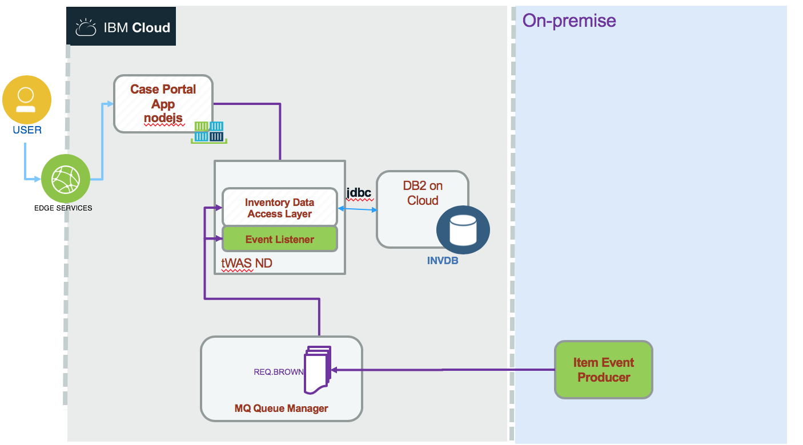

Lift and shift of an integration solution
In this article and solution implementation we are detailing how to migrate part of an 'hybrid cloud reference architecture implementation solution' based on MQ, DB2 and traditional WAS (tWAS) to a pure IBM Cloud deployment.
Updated (03/12/2018).
The following diagram illustrates the starting environment:

where the components are:
- User interface is the current cloud native portal application done with Angular 6 and BFF with nodejs that we can deploy as a cloud foundry app, or as container on IBM Container service. (See this project for detail).
- Inventory data access layer is a JEE app used to expose SOAP interface implemented with JAXWS and JPA to support SOA services as data access layer to the inventory database. It is deployed to Traditional WebSphere Application Service 8.5.5 (tWAS).
- An inventory DB2 to persist items, suppliers and inventory data in DB2.
- Item event producer is a java application to simulate event created from a warehouse when an item is added to the inventory in the given warehouse. This is an event sent as a message to a Queue defined in the MQ manager.
- An event listener application implemented as a Message Driven Bean (MDB) deployed on tWAS. This application persists the date to the inventory database.
The target environment will be using the same components but we move the DB, WAS apps and MQ to IBM Cloud.

In the target environment the MQ layer is using one queue manager deployed on IBM Cloud. The MDB listens to queue defined on queue manager on Cloud and uses the Data Access Layer SOAP service to save the item it received from the message payload.
Pre-requisites
To be able to perform this lift and shift exercise by yourself you can use two approaches:
- Use at least three virtual machines with Linux OS (Ubuntu or RedHat) and install the IBM products on them. We did this approach at first to develop all the content.
- Use 3 docker images we have built to 'simulate' the on-premise environment. As the goal is really taking running workloads and move to IBM Cloud, the source environment, from a tutorial point of view, is less relevant. For production workload, then it will be important to assess the different configurations.
Running on-premise using docker
The DB2 and MQ projects have their Dockerfile for building custom images from the official IBM dockerhub images or use the public images we built and pushed to dockerhub. In this project the docker folder has scripts and docker compose file to start the 'on-premise' environment on your local machine.
Lift And Shift
We propose incremental move:
1- Db2 database migration
We are addressing the lift and shift DB2 workload migration in this note where we use different approaches, one using dbmove tools and one lift tooling.
2- Traditional WAS App lift and shift
We are using the same approach as detailed in this tutorial. but we adapt it for our purpose.
The application to migrate is in the data access layer service for the inventory data base as defined in this repository.
For refresh our memory or for beginner we are providing how to configure the resources to access DB2 from WAS in this note. Once resources are configured we can deploy the war file using the admin console or with script: see the note here for detail on how to deploy the war to WAS.
Tooling
There are a set of tools available to assess application for migration:
- WebSphere Application Server Migration Toolkit https://developer.ibm.com/wasdev/downloads/#asset/tools-WebSphere_Application_Server_Migration_Toolkit: The migration toolkit provides Eclipse-based tools for WebSphere migration scenarios including Cloud migration, WebSphere version to version migration including WAS Liberty, and migration from third-party application servers.
- Videos and demos around toolingHow to use migration toolkit for Discovery, assessment& binary scan : https://www-01.ibm.com/support/docview.wss?uid=swg27008724&aid=11
- Getting started with WebSphere in the Cloud : https://developer.ibm.com/wasdev/docs/getting-started-websphere-cloud/
- Moving WebSphere Worklods to public Cloud : https://www.ibm.com/cloud/garage/tutorials/was_lift_shift/Learn how to use the public cloud as either the upgrade development and test environment for your WebSphere infrastructure or as your new permanent environment.
- Migrating your WebSphere configurations to Cloud: https://ibm.ent.box.com/s/vja6fm8u3mktw9v26x1glvayvv5vlzrq
- WebSphere Configuration migration tool for IBM Cloud : https://developer.ibm.com/wasdev/docs/websphere-config-migration-cloud/
- Moving applications to the cloud :https://developer.ibm.com/wasdev/docs/migration/
3- MQ based messaging solution
The implementation of the messaging solution is done in this repository and we are providing a step by step tutorial to do MQ workload lift and shift.